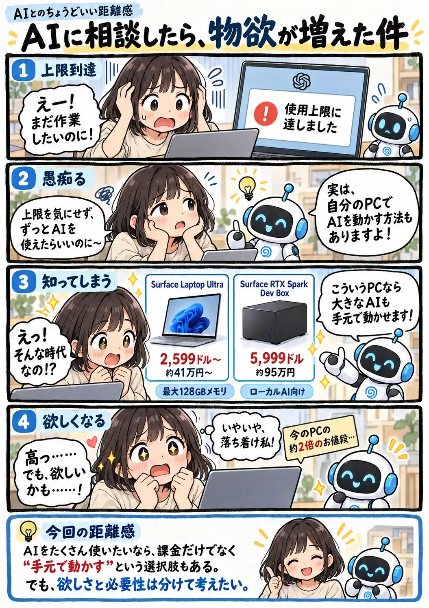

#158
AIに相談したら、物欲が増えた件
上限に困って相談しただけなのに、PCまで欲しくなった！？

メモ
最近は、大きなAIモデルを自分のPCで動かすための高性能な製品も登場しています。クラウドサービスとは違い、手元で動かすAIならサービスごとの利用回数制限を気にせず使える場合もあります。
ただし、同じAIをそのまま動かせるとは限らず、必要なメモリや設定、電気代も考えどころ。新しい選択肢が増えたのは嬉しいけれど、欲しい気持ちが先に走りがちですね（笑）
今回の距離感
AIを手元で動かす選択肢も増えてきた。でも、便利そうだからといってすぐ買える値段ではない。欲しさと必要性を分けて考えるくらいがちょうどいい。